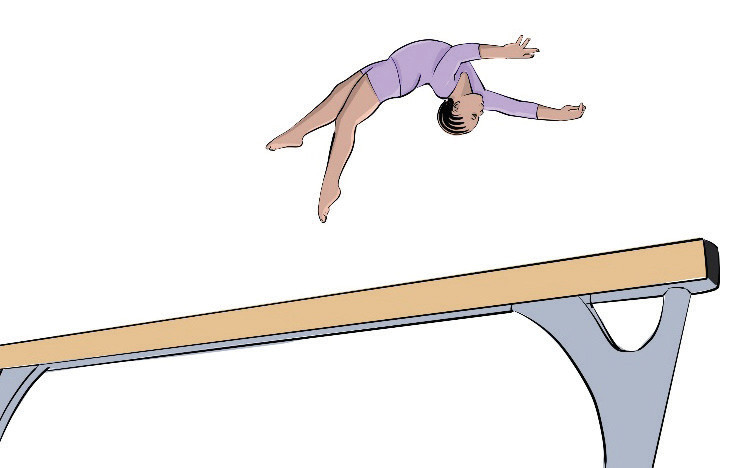

Balance beam dismount
Dismounting the balance beam is the way a gymnast skillfully leaves the balance beam at the end of their routine. The following steps will help you practice dismounting from balance beam:
(i)
Stand at the end of the beam, facing forward;
(ii)
Push off with your legs, jumping into the air.
Keep your body straight or tucked depending on the style, Figure 4.22;
(iii)
Land with both feet with slightly bent knees; and
(iv)
Hold the landing position with arms up for stability.

Cartwheel dismount
Cartwheel dismount is a type of dismount from the balance beam where the gymnast performs a cartwheel at the end of the beam as a transition to leave the apparatus. The following steps will help you practice cartwheel dismounting from a balance beam:
(i)
Place hands on the beam as you prepare to move into the cartwheel or round-off;
(ii)
Perform a cartwheel or round-off (a round-off helps with more rotation and power); and
(iii)
As you complete the cartwheel or round-off, push off with your hands and land with your feet on the floor, Figure 4.23.